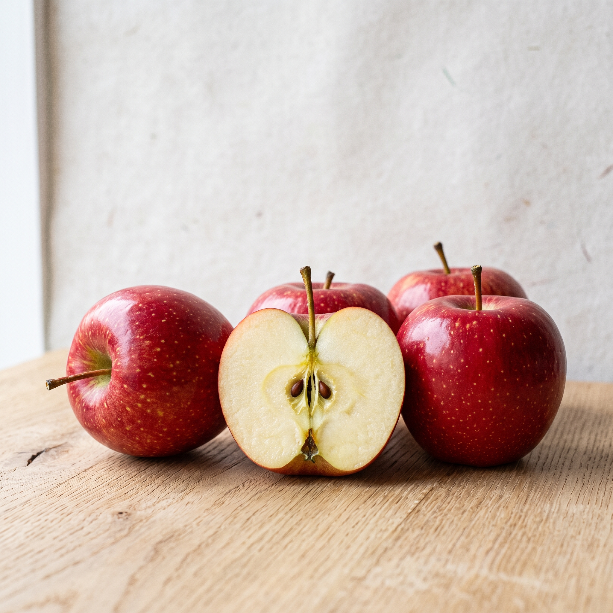
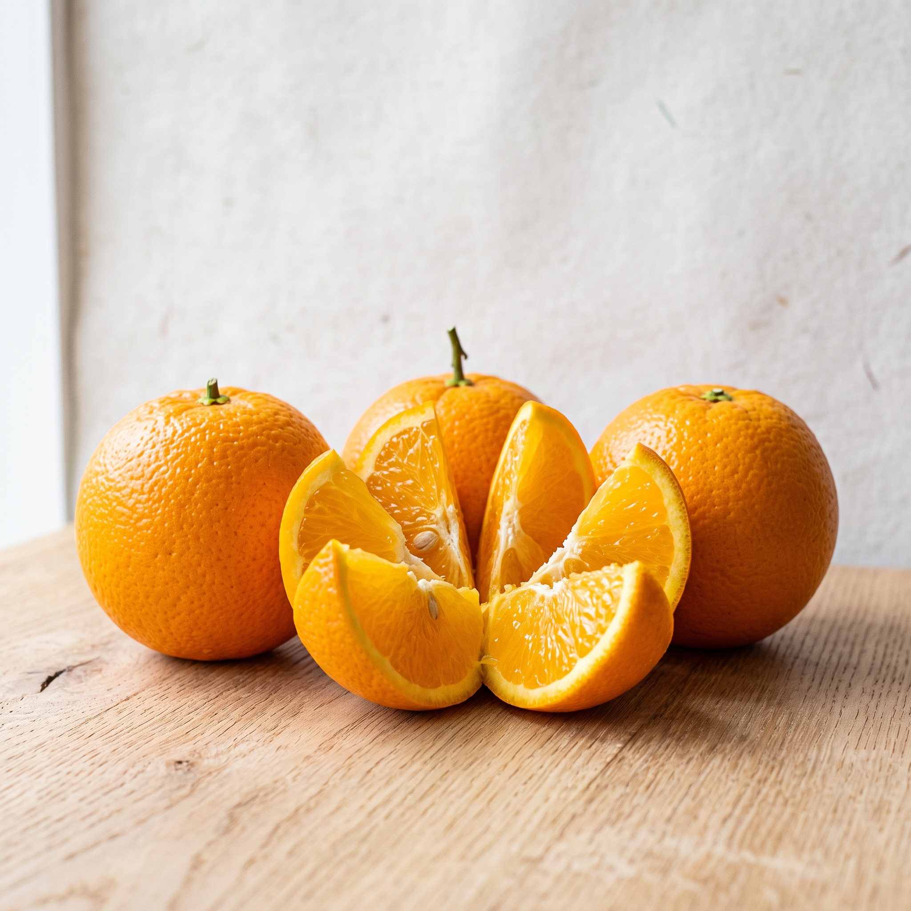
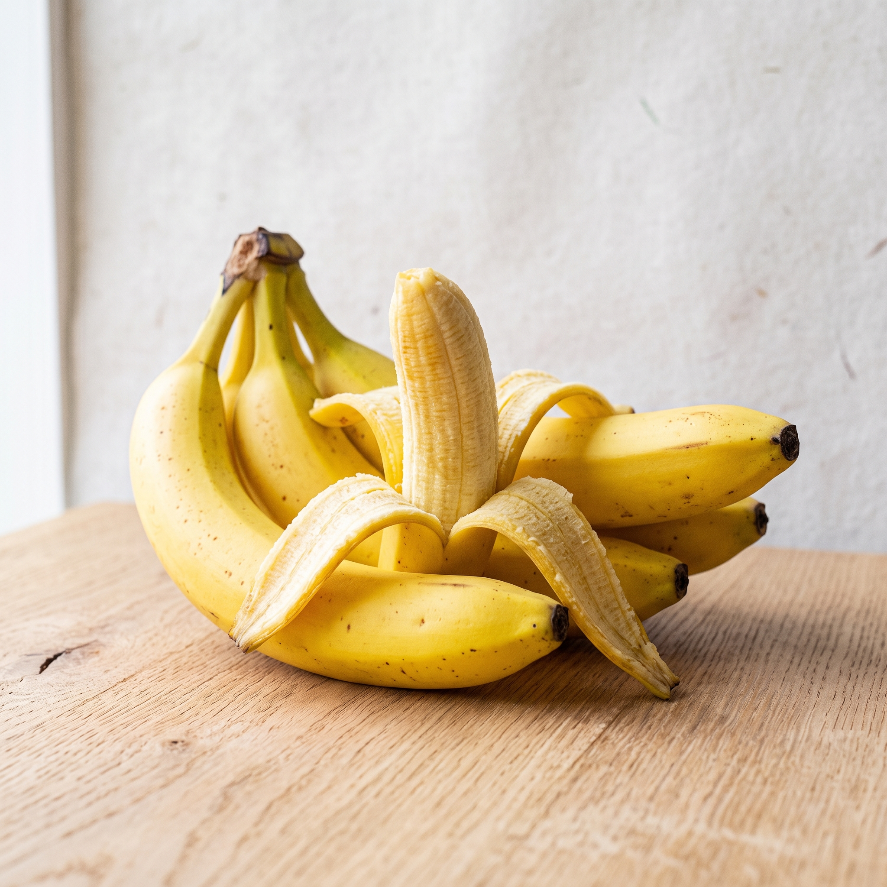
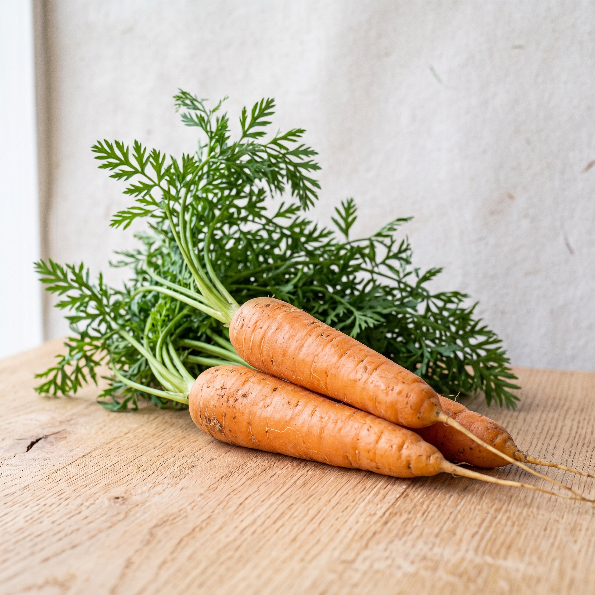
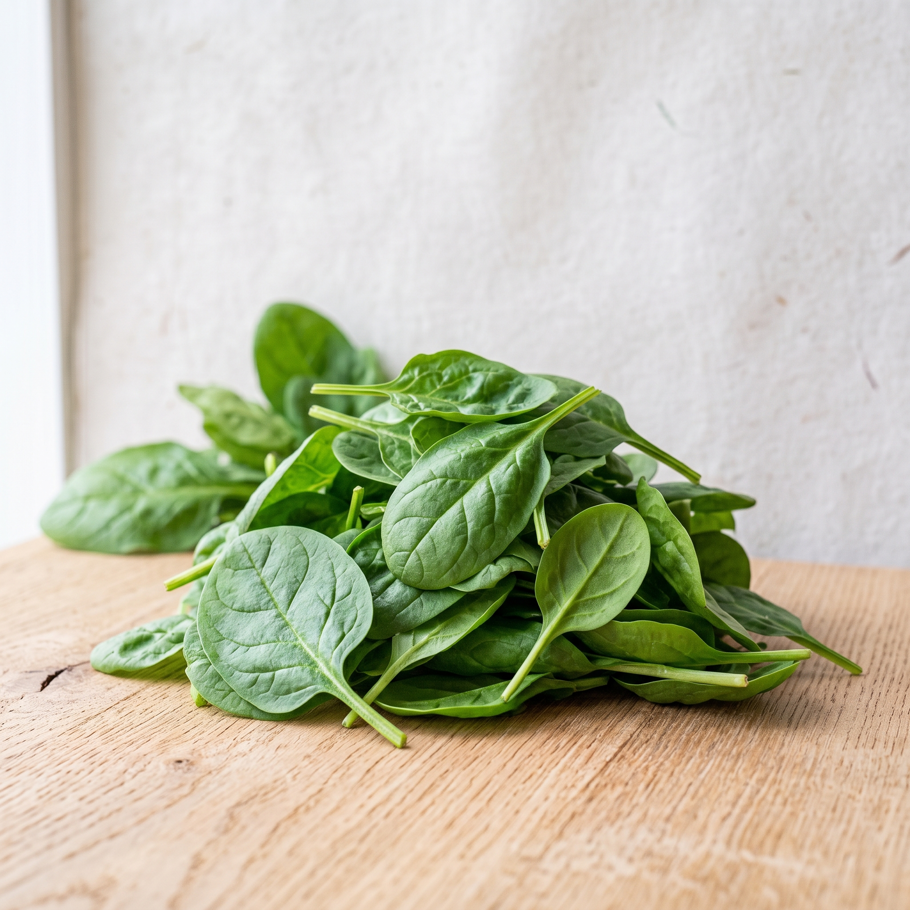
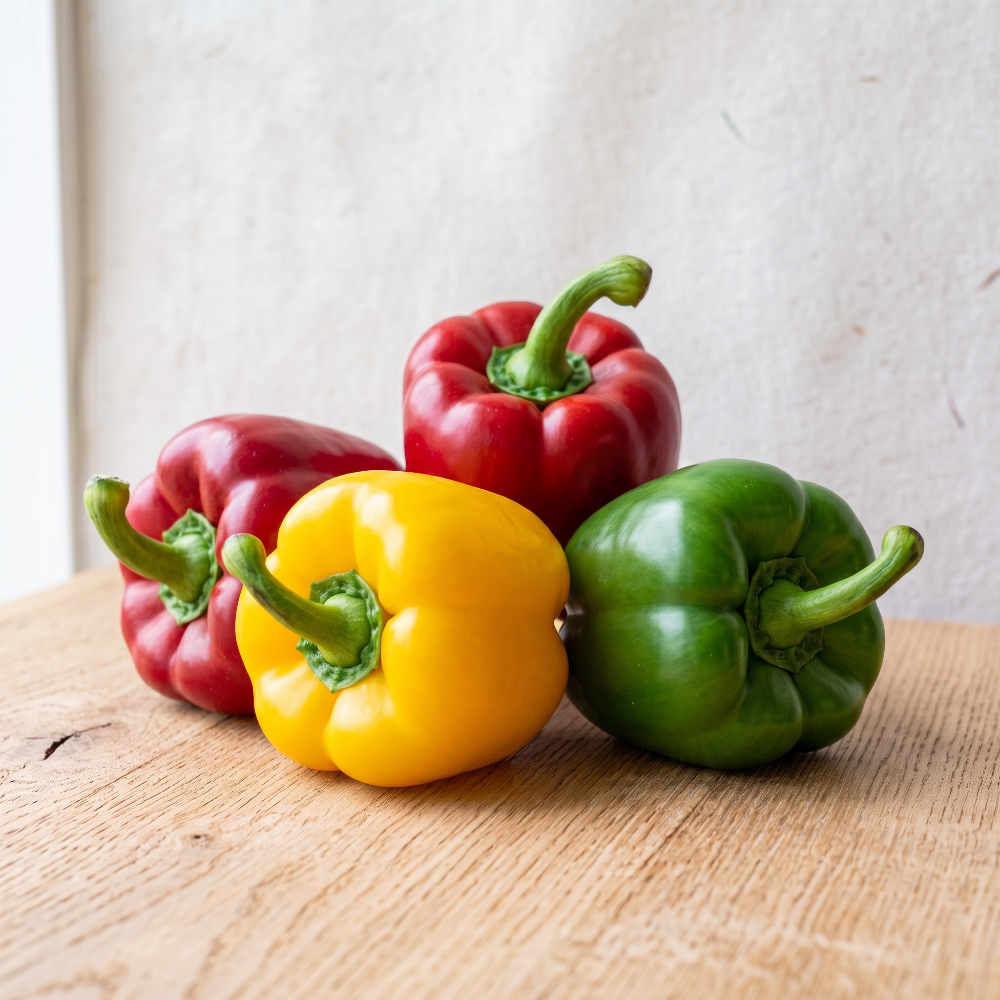
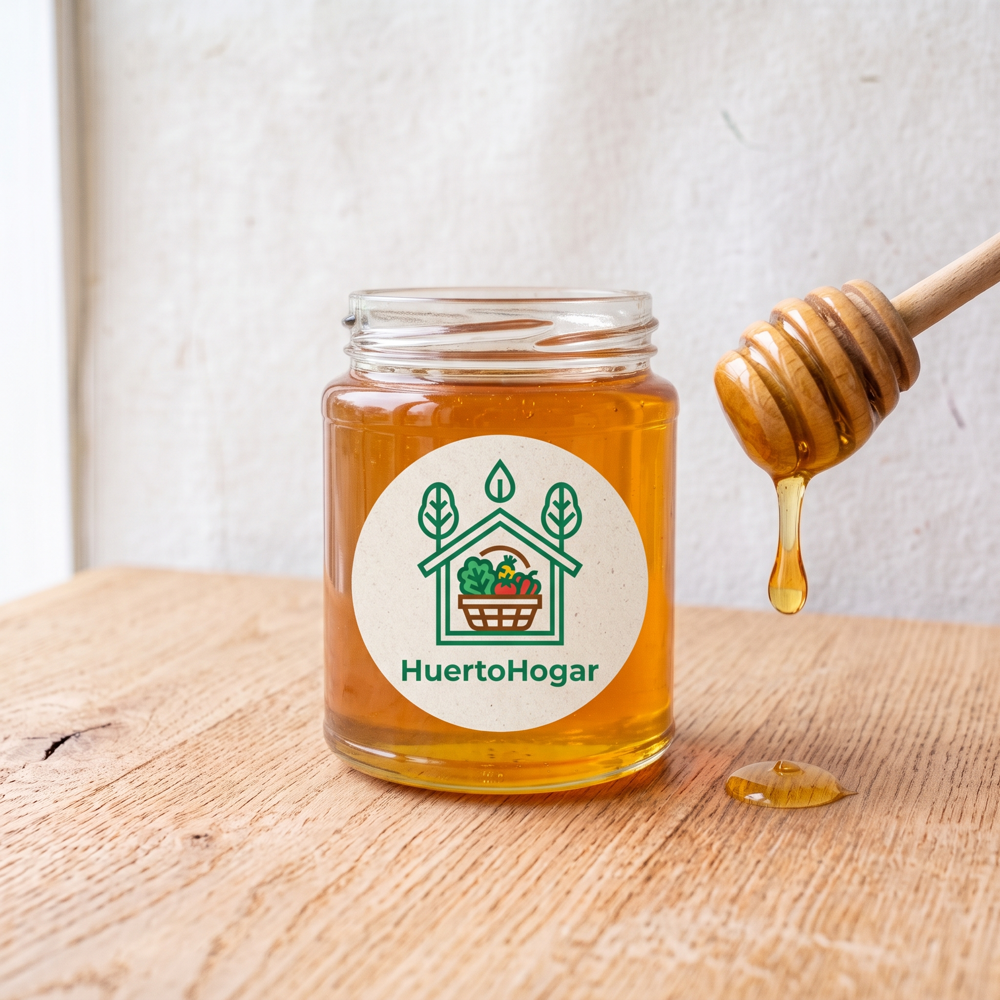
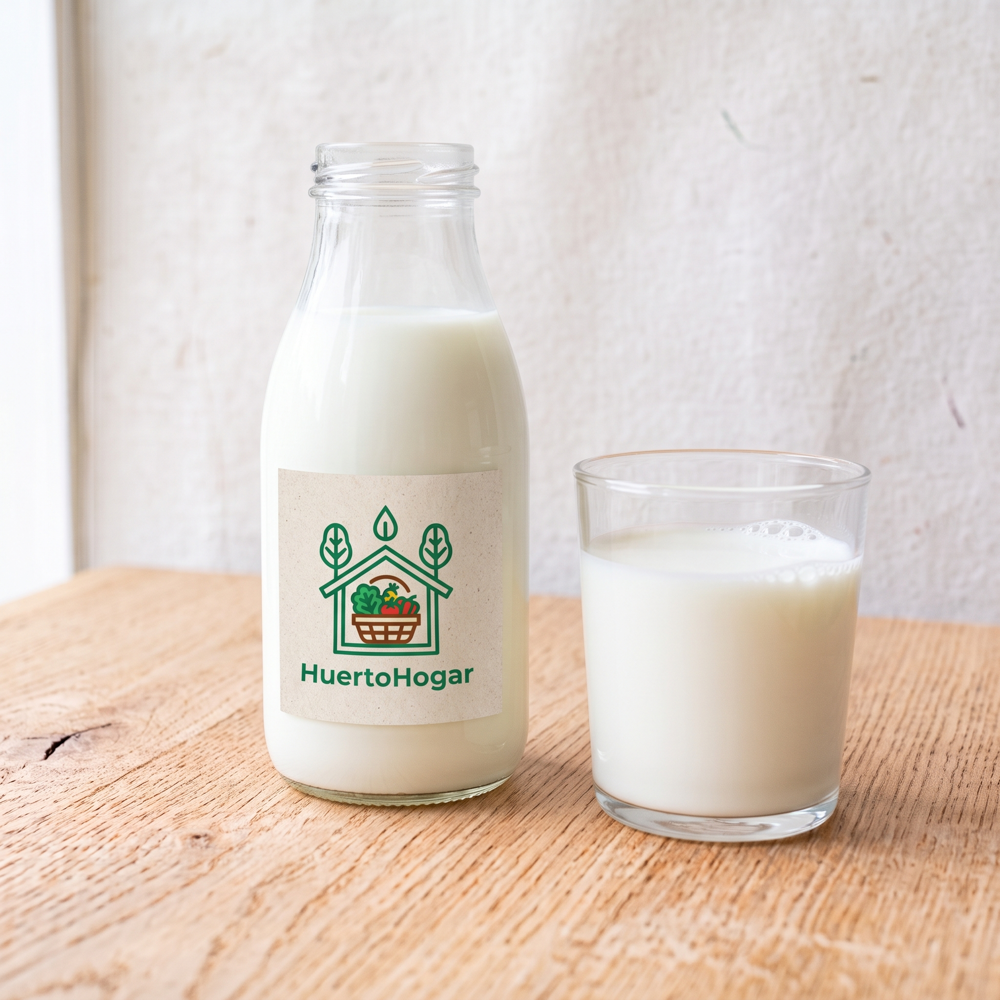

FR001 - Manzanas Fuji
$1.200 CLP por kilo
Stock: 150 kilos
Manzanas Fuji crujientes y dulces, cultivadas en el Valle del Maule. Perfectas para meriendas saludables o como ingrediente en postres.
Del campo al hogar
Nuestra selección de frutas frescas ofrece una experiencia directa del campo a tu hogar. Estas frutas se cultivan y cosechan en el punto óptimo de madurez para asegurar su sabor y frescura.

$1.200 CLP por kilo
Stock: 150 kilos
Manzanas Fuji crujientes y dulces, cultivadas en el Valle del Maule. Perfectas para meriendas saludables o como ingrediente en postres.

$1.000 CLP por kilo
Stock: 200 kilos
Jugosas y ricas en vitamina C, estas naranjas Valencia son ideales para zumos frescos y refrescantes.

$800 CLP por kilo
Stock: 250 kilos
Plátanos maduros y dulces, perfectos para el desayuno o como snack energético. Ricos en potasio y vitaminas.
Descubre nuestra gama de verduras orgánicas, cultivadas sin el uso de pesticidas ni químicos, garantizando un sabor auténtico y natural.

$900 CLP por kilo
Stock: 100 kilos
Zanahorias crujientes cultivadas sin pesticidas en la Región de O'Higgins. Excelente fuente de vitamina A y fibra.

$700 CLP por bolsa de 500g
Stock: 80 bolsas
Espinacas frescas y nutritivas, perfectas para ensaladas y batidos verdes, cultivadas bajo prácticas orgánicas.

$1.500 CLP por kilo
Stock: 120 kilos
Pimientos rojos, amarillos y verdes, ideales para salteados y platos coloridos. Ricos en antioxidantes y vitaminas.
Nuestros productos orgánicos están elaborados con ingredientes naturales y procesados de manera responsable para mantener sus beneficios saludables.

$5.000 CLP por frasco de 500g
Stock: 50 frascos
Miel pura y orgánica producida por apicultores locales. Rica en antioxidantes y con un sabor inigualable.
Los productos lácteos de HuertoHogar provienen de granjas locales que se dedican a la producción responsable y de calidad. Ofrecemos una gama de leches, yogures y otros derivados que conservan su frescura y sabor auténtico.

Precio no especificado en el documento del caso
Stock no especificado en el documento del caso